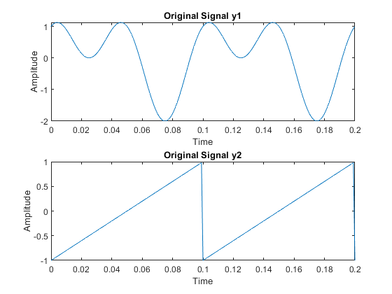
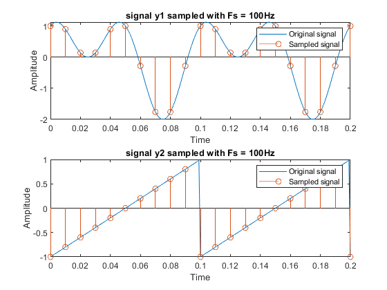
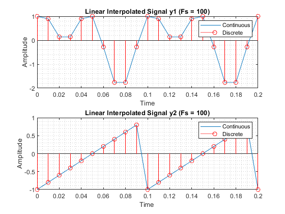
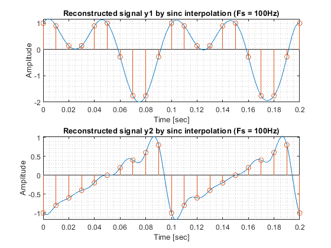
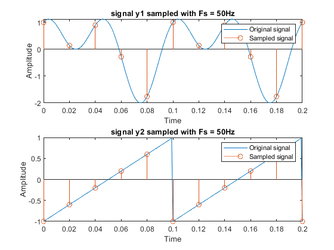
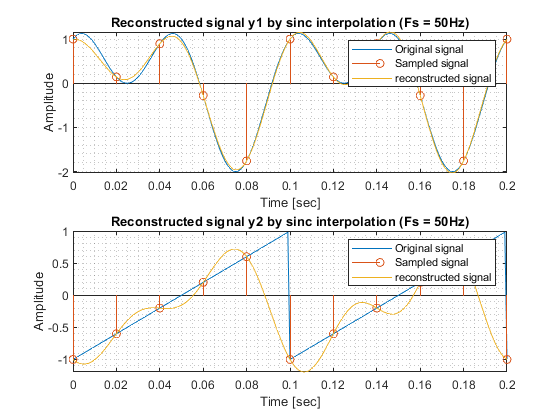
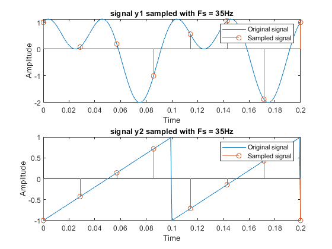
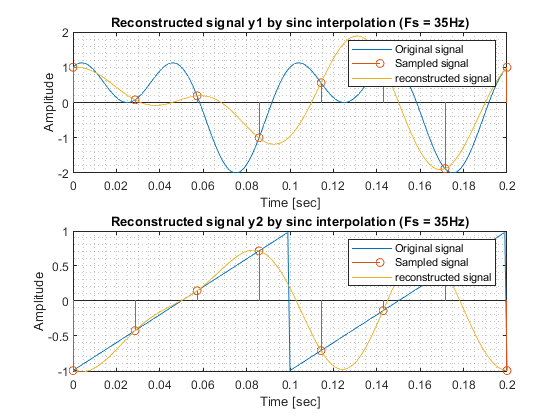
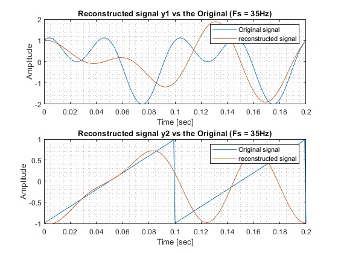

Digital Signal Processing MATLAB HW2 - q1
Professor: Dr. Sheikhzadeh Author: Maryam Barazande - 9723016 E-mail: maryambarazande7@gmail.com University: Amirkabir University of Technology
Contents
Clear recent data
clear; close all; clc;
RECONSTRUCTION
A. Sampling
PART 1
define parameters
f = 10; t = 0:0.001:0.2 ; % compute signals y1 = sin(2*pi*f*t) + cos(4*pi*f*t); y2 = sawtooth(2*pi*f*t); % plot signals figure(1); subplot(2,1,1); plot(t,y1); title("Original Signal y1"); xlabel('Time'); ylabel('Amplitude'); subplot(2,1,2); plot(t,y2); title("Original Signal y2"); xlabel('Time'); ylabel('Amplitude');
PART 2
define parameters
fs = 100; ts = 0: 1/fs:0.2 ; % sampling signals ys1 = sin(2*pi*f*ts) + cos(4*pi*f*ts); ys2 = sawtooth(2*pi*f*ts); % plot signals figure(2); subplot(2,1,1); plot(t,y1); hold on; stem(ts,ys1); title("signal y1 sampled with Fs = 100Hz"); xlabel('Time'); ylabel('Amplitude'); legend('Original signal', 'Sampled signal'); subplot(2,1,2); plot(t,y2); hold on; stem(ts,ys2); title("signal y2 sampled with Fs = 100Hz"); xlabel('Time'); ylabel('Amplitude'); legend('Original signal', 'Sampled signal');
B. Interpolation
PART 1. Linear Interpolation
fs_interp1 = 100; ts_interp1 = 0:1/fs_interp1:0.2; ys1_interp1 = interp1(t,y1,ts_interp1,"linear"); % plot signals figure(3); subplot(2,1,1); plot(ts_interp1,ys1_interp1); hold on; stem(ts_interp1,ys1_interp1,'r'); grid minor; title("Linear Interpolated Signal y1 (Fs = 100)"); xlabel('Time'); ylabel('Amplitude'); legend('Continuous', 'Discrete'); ys2_interp1 = interp1(t,y2,ts_interp1,"linear"); subplot(2,1,2); plot(ts_interp1,ys2_interp1); hold on; stem(ts_interp1,ys2_interp1,'r'); grid minor; title("Linear Interpolated Signal y2 (Fs = 100)"); xlabel('Time '); ylabel('Amplitude'); legend('Continuous', 'Discrete');
PART2. Sinc Interpolation
%%%%%%%%%%%%%%%%%%%%%%%%%%% 1 %%%%%%%%%%%%%%%%%%%%%%%%%%%%%%%%%%%%%%%%%%% yr1 = zeros(size(t)); yr2 = zeros(size(t)); % reconstructing signals by sinc interpolation for i = 1 : length(t) for n = 0 : length(ts) - 1 yr1(i) = yr1(i) + ys1(n + 1) * sinc((t(i) - n * (1/fs)) *fs); yr2(i) = yr2(i) + ys2(n + 1) * sinc((t(i) - n * (1/fs)) *fs); end end % plot signals figure(4); subplot(2, 1, 1); plot(t, yr1); hold on; stem(ts, ys1); grid minor; title('Reconstructed signal y1 by sinc interpolation (Fs = 100Hz)'); xlabel('Time [sec]'); ylabel('Amplitude'); subplot(2, 1, 2); plot(t, yr2); hold on; stem(ts, ys2); grid minor; title('Reconstructed signal y2 by sinc interpolation (Fs = 100Hz)'); xlabel('Time [sec]'); ylabel('Amplitude'); %%%%%%%%%%%%%%%%%%%%%%%%%%% 2 %%%%%%%%%%%%%%%%%%%%%%%%%%%%%%%%%%%%%%%%%%% % Setting different Values for Fs then sample and sinc interpolation %%%% Fs = 50; % sampling signals fs_new = 50; ts_new = 0: 1/fs_new :0.2 ; ys1_new = sin(2*pi*f*ts_new) + cos(4*pi*f*ts_new); ys2_new = sawtooth(2*pi*f*ts_new); figure(5); subplot(2,1,1); plot(t,y1); hold on; stem(ts_new,ys1_new); title("signal y1 sampled with Fs = 50Hz"); xlabel('Time'); ylabel('Amplitude'); legend('Original signal', 'Sampled signal'); subplot(2,1,2); plot(t,y2); hold on; stem(ts_new,ys2_new); title("signal y2 sampled with Fs = 50Hz"); xlabel('Time'); ylabel('Amplitude'); legend('Original signal', 'Sampled signal'); % reconstructing signals by sinc interpolation yr1_new = zeros(size(t)); yr2_new = zeros(size(t)); for i = 1 : length(t) for n = 0 : length(ts_new) - 1 yr1_new(i) = yr1_new(i) + ys1_new(n + 1) * sinc((t(i) - n * (1/fs_new)) *fs_new); yr2_new(i) = yr2_new(i) + ys2_new(n + 1) * sinc((t(i) - n * (1/fs_new)) *fs_new); end end % plot signals figure(6); subplot(2, 1, 1); plot(t,y1); hold on; stem(ts_new, ys1_new); hold on; plot(t, yr1_new); grid minor; title('Reconstructed signal y1 by sinc interpolation (Fs = 50Hz)'); xlabel('Time [sec]'); ylabel('Amplitude'); legend('Original signal', 'Sampled signal','reconstructed signal'); subplot(2, 1, 2); plot(t,y2); hold on; stem(ts_new, ys2_new); hold on; plot(t, yr2_new); grid minor; title('Reconstructed signal y2 by sinc interpolation (Fs = 50Hz)'); xlabel('Time [sec]'); ylabel('Amplitude'); legend('Original signal', 'Sampled signal','reconstructed signal'); %%%% Fs = 35 % sampling signals fs_new = 35; ts_new = 0: 1/fs_new :0.2 ; ys1_new = sin(2*pi*f*ts_new) + cos(4*pi*f*ts_new); ys2_new = sawtooth(2*pi*f*ts_new); figure(7); subplot(2,1,1); plot(t,y1); hold on; stem(ts_new,ys1_new); title("signal y1 sampled with Fs = 35Hz"); xlabel('Time'); ylabel('Amplitude'); legend('Original signal', 'Sampled signal'); subplot(2,1,2); plot(t,y2); hold on; stem(ts_new,ys2_new); title("signal y2 sampled with Fs = 35Hz"); xlabel('Time'); ylabel('Amplitude'); legend('Original signal', 'Sampled signal'); % reconstructing signals by sinc interpolation yr1_new = zeros(size(t)); yr2_new = zeros(size(t)); for i = 1 : length(t) for n = 0 : length(ts_new) - 1 yr1_new(i) = yr1_new(i) + ys1_new(n + 1) * sinc((t(i) - n * (1/fs_new)) *fs_new); yr2_new(i) = yr2_new(i) + ys2_new(n + 1) * sinc((t(i) - n * (1/fs_new)) *fs_new); end end % plot signals figure(8); subplot(2, 1, 1); plot(t,y1); hold on; stem(ts_new, ys1_new); hold on; plot(t, yr1_new); grid minor; title('Reconstructed signal y1 by sinc interpolation (Fs = 35Hz)'); xlabel('Time [sec]'); ylabel('Amplitude'); legend('Original signal', 'Sampled signal','reconstructed signal'); subplot(2, 1, 2); plot(t,y2); hold on; stem(ts_new, ys2_new); hold on; plot(t, yr2_new); grid minor; title('Reconstructed signal y2 by sinc interpolation (Fs = 35Hz)'); xlabel('Time [sec]'); ylabel('Amplitude'); legend('Original signal', 'Sampled signal','reconstructed signal'); %%%%%%%%%%%%%%%%%%%%%%%%%%% 3 %%%%%%%%%%%%%%%%%%%%%%%%%%%%%%%%%%%%%%%%%%% figure(9); subplot(2, 1, 1); plot(t,y1); hold on; plot(t, yr1_new); grid minor; title('Reconstructed signal y1 vs the Original (Fs = 35Hz)'); xlabel('Time [sec]'); ylabel('Amplitude'); legend('Original signal', 'reconstructed signal'); subplot(2, 1, 2); plot(t,y2); hold on; plot(t, yr2_new); grid minor; title('Reconstructed signal y2 vs the Original (Fs = 35Hz)'); xlabel('Time [sec]'); ylabel('Amplitude'); legend('Original signal','reconstructed signal');     